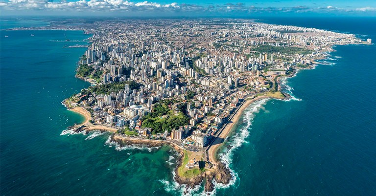

A Bahia é um estado vibrante localizado na região Nordeste do Brasil, conhecido por sua rica cultura, história e belezas naturais. Sua capital, Salvador, é famosa por suas festas tradicionais, como o Carnaval, e por sua arquitetura colonial colorida. A Bahia possui uma diversidade de paisagens, incluindo praias paradisíacas na Costa do Sauípe, Morro de São Paulo e Porto Seguro, além de áreas de sertão e chapadas. A economia do estado é baseada na agricultura, na indústria petroquímica, no turismo e na cultura, que influencia a música, a dança e a culinária, como o acarajé e o vatapá. A Bahia é um símbolo de diversidade cultural e natural, sendo um dos destinos mais encantadores do Brasil.
